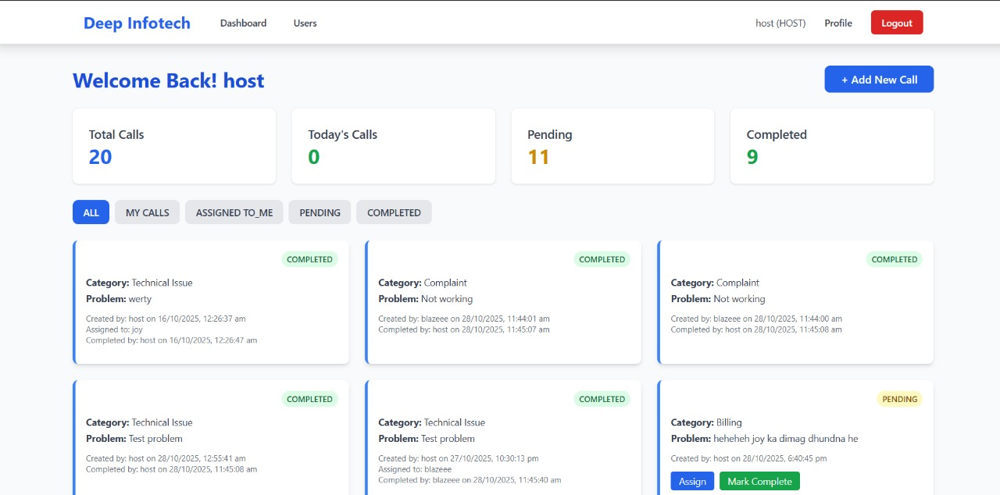

CallSync – A Role-Based Smart Call Management System
Overview & Objectives: Designed to solve messy operational communication, CallSync is a platform that brings clarity to managing customer calls. It allows teams to assign tasks and track progress in one place, replacing confusion with a transparent workflow.
Challenges & Solutions: The main challenge was implementing a secure and efficient role-based access control system. This was solved using middleware in the Express.js backend to verify user roles before granting access to specific API routes, ensuring data security.
View Code on GitHub